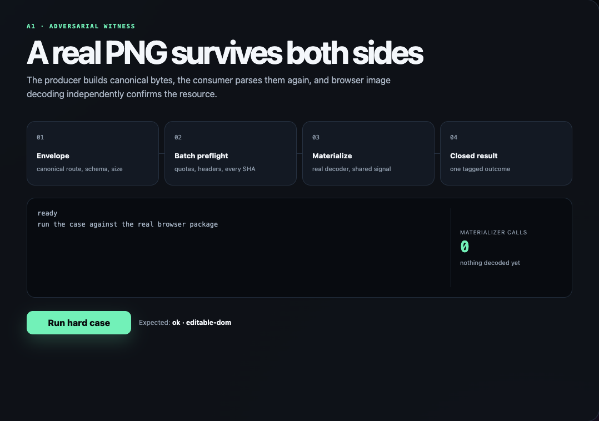

A1
A real PNG survives both sides
The producer builds canonical text, the consumer parses it again, and Chrome decodes the resource independently on both passes.
ok · editable-dom

Fixture to disk
| Thing | Before | After |
|---|---|---|
| Capture text | input object | v2 · 853 bytes |
| PNG decode | not entered | 2 accepted calls |
| Contract | pending | ok · editable-dom |
Open persisted witness
{
"result": {
"ok": true,
"artifactKind": "editable-dom",
"version": "2.0",
"canonicalUtf8Bytes": 853
},
"materializerCalls": 2,
"decoder": "createImageBitmap"
}